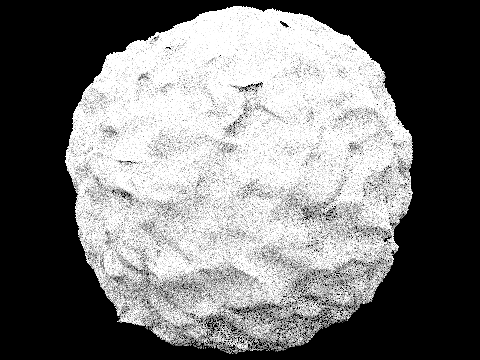

In this assignment, we implemented functionality to render realistic-looking images from just knowing the location of objects and light sources. We did this by tracing rays from pixels in the prospective image to sampled points in the scenes, with the option to either sample with the uniform hemisphere method or the light importance method. We implemented BVH acceleration and adaptive sampling to greatly increase the speed of rendering, and implemented the ability for rays to bounce multiple times.
We split up this assignment and did our parts mostly separately, with each person checking the other's tasks after they were done. This went fine, as we taught each other the parts that we did not understand that we read in each other's code, and caught each other's bugs.
| Part 1 | Part 2 | Part 3 | Part 4 | Part 5 |
1: Ray Generation and Intersection
In order to generate a ray, we must first transform the point in image space that the ray will pass through into a point in world-space, where the camera is the origin of the ray. We do this in part 1.1 by first computing the coordinates of the top right corner of the image in camera space to be
$(x_{top-right}, y_{top-right}, z) = (\tan(0.5 * hFov), \tan(0.5 * vFov), -1)$
using the formula given in the project spec (with tangent being taken of radian values, of course). We then compute the desired point in camera space to be
$(x_{camera}, y_{camera}, z) = (2 * x_{image} * x_{top-right} - x_{top-right}, 2 * y_{image} * y_{top-right} - y_{top-right}, z)$
. Finally, we convert the camera-space point to world-space by multiplying it by the camera-to-world rotation matrix.
We then create a ray in world-space by normalizing the point, and initializing a Ray object with parameters of the camera's position and the newly computed point. We set the ray's min_t and max_t properties to be the camera's nClip and fClip properties, respectively.
Now that we have a method to generate a ray, we can start our rendering pipeline! For all pixels in the prospective image:
- Take num_samples (given by the desired sampling rate) samples from the prospective image. For each sample:
- Using our earlier-outlined ray generation method, generate a ray from our observation perspective (the location of our camera) to the normalized $(x_{pixel} + x_{sample}, y_{pixel} + y_{sample})$ point.
- Estimate and record the global illumination of the given ray.
- Average all estimated global illuminations.
- Set the color of the pixel at to be the average estimated global illumination.
- Record that we took num_samples samples for the pixel by setting its value in the sampleCountBuffer.
Once we have set the colors of all pixels in the image, we can output the image.
When estimating global illumination of a given ray, we have to check what it intersects with. For checking for intersections with triangles specifically, we implement the Möller-Trumbore intersection algorithm. Given a triange T with vertices $v_1$, $v_2$, and $v_3$ and ray R with origin $o$ and destination $d$, the Möller-Trumbore intersection algorithm is as follows:
- Create vectors $edge_1$, $edge_2$, and $s$ as the vectors from the first vertex of the T to the second vertex of T, the first vertex of the T to the third vertex of T, and the first vertex of the T to the origin of R, respectively. ($edge_1 = v_2 - v_1$, $edge_2 = v_3 - v_1$, $s = o - v_1$)
- Compute vectors $s_1$ and $s_2$ as the cross products of $o$ and $edge_2$, and $s$ and $edge_1$, respectively. ($s_1 = o \times edge_2$, $s_2 = s \times edge_1$)
- Create variables $t = \frac{s_2 \cdot edge_2}{s_1 \cdot edge_1}, b_1 = \frac{s_1 \cdot s}{s_1 \cdot edge_1}, b_2 = \frac{s_2 \cdot d}{s_1 \cdot edge_1}$. If any of the following are true, there is no intersection:
- $t < R_{t_{min}}$
- $t > R_{t_{max}}$
- $b_1 < 0$
- $b_2 < 0$
- $b_1 + b_2 > 1$
- Otherwise, there is an intersection. R will not be able to intersect with anything behind the current object, so we set $R_{t_{max}} = t$, and set the current intersecting object to T with the location set to $t$.
|
|

|

|

|
Part 2: Bounding Volume Hierarchy
When constructing a BVH, we take in parameters for the start of an iterator of primitives in the entire scene, the end of said iterator, and the max_leaf_size (the maximum number of primitives in one BVH node). Our BVH construction algorithm, contained in the construct_bvh method, is as follows:
- We first initialize two bounding boxes, bbox (to bound all primitives encompassed by the node) and cenBox (to bound the centroids of all primitives' bounding boxes encompassed by the node).
- For all primitives in the range from start to end (inclusive), we:
- Get the primitive's bounding box, bb
- Expand bbox to include bb
- Expand cenBox to include the centroid of bb
- Increment a count variable that is keeping track of the number of primitives in the node
- Then, we create a new BVHnode.
- In the case in which the number of primitives in the node is less than or equal to the max_leaf_size, then the node can be a leaf node. We simply set the start and end of the new node to the start and end that we passed into the function, and return the node.
- Otherwise, if the number of primitives in the node is greater than the max_leaf_size, we must split the primitives between child nodes. Our partitioning logic is the following:
- To find the splitting axis that would give us the greatest benefit, we find the largest axis of the bbox.
- We find the center of the centroid of the cenBox along this axis.
- We partition the primitives based on whether their bounding box's centroid is less than the previously found center of the centroid of the cenBox along the previously found axis.
- In the edge case in which all the primitives are on the same side of the partition, we are not able to split, and this node becomes a leaf node anyway—we set the start and end of the node to the start and end that we passed into the function, and return the node.
- The left child of the node is set to the BVHnode containing the first group of the partition, while the right child is set to the BVHnode containing the second group (both nodes created by a recursive call to construct_bvh).
- Finally, we return the node.
Large Images
The following images are too large to create in reasonable time without BVH acceleration:

|
|

|
|
Rendering Times
| Scene | Rendering Time (s) (without BVH acceleration) |
Rendering Time (s) (with BVH acceleration) |
| Maxplanck | 284.9589s | 0.1353s |
| Peter | 226.1683s | 0.1393s |
| CBbunny | 164.7074s | 0.1310s |
As you can see from the above results, BVH significantly improves the rendering times of our scenes. The scenes we compared were a whole two orders of magnitude faster! (The scenes we used are shown in the part 1 section.)
Part 3: Direct Illumination
The first implementation of the direct lighting function, contained in the method estimate_direct_lighting_hemisphere, is done by uniform hemisphere sampling of all rays from the starting point:
- We are given a ray R (with origin $o$ and destination $d$) and an intersect I. From these, and a coordinate transform matrix $w2o$ that we calculated, we can calculate the point that the ray hits ($hit\_point = o + d * I_t$), as well as the direction that the ray points, $w_{out} = w2o * -d$.
- We set num_samples to be the number of light sources in the scene times the number of samples per area light source. We initialize a vector for the outgoing radiance, $L_{out}$. Then, num_samples times, we:
- Take a sample $w_{in}$ from the hemisphere at the current point and convert it to the world coordinates using $w2o$.
- Create a new ray $R_{new}$ with origin $hit\_point$ and the converted new sample as the destination. For numerical stability, we set the minimum t value of the new ray to ε (a very small value, equivalent to 0.00001 in this context).
- If the new ray intersects the BVH, we store the intersection ($I_{new}$), and then add the radiance of the intersection to $L_{out}$ ($L_{out} {\mathrel{+}=} bsdf\_reflection_{I_{new}}(w_{out}, w_{in})* bsdf\_emission_{I_{new}} * \cos{w_{in}}$).
- Finally, we return the solid angle of the hemisphere multiplied by the average outgoing radiance across all samples: $2\pi * \frac{L_{out}}{num\_samples}$.
The second implementation of the direct lighting function, contained in the method estimate_direct_lighting_importance, is done by importance sampling only the rays towards the light sources:
- We are given a ray R (with origin $o$ and destination $d$) and an intersect I. From these, and a coordinate transform matrix $w2o$ that we calculated, we can calculate the point that the ray hits ($hit\_point = o + d * I_t$), as well as the direction that the ray points, $w_{out} = w2o * -d$. Additonally, we initialize a vector for the outgoing radiance, $L_{out}$.
- Then, for all light sources in the scene:
- If the light is a delta light, we will be taking one sample. Otherwise, we will be taking the number of samples given by the scene's number of samples per area light source value.
- We initialize a vector $L_{out_{part}}$.
- Then, for the appropriate number of times, we:
- Find the radiance at the hit_point by sampling the light, also storing the distance from the hit_point to the light, the direction of the incoming radiance at the hit_point in world coordinates, and the pdf (denoted as $radiance$, $distToLight$, $w_{in\_world}$, and $pdf$, respectively).
- Using the o2w matrix to change to object space, we find the incoming radiance at the hit_point in world coordinates to be $o2w * w_{in\_world}$.
- If the z-coordinate of $w_{in}$ is greater than 0 (it points from the light source towards the hit_point), then the light source may be able to contribute towards the radiance of the point. We can then create a new ray $R_{new}$ with origin $hit\_point$ and destination $w_{in\_world}$. For numerical stability, we set the minimum t value of the new ray to ε (a very small value, equivalent to 0.00001 in this context), and its maximum t value to distToLight - ε (to make sure that there is nothing between the hit_point and the light, so that we know that the light hits the hit_point).
- We then check whether $R_{new}$ intersects the BVH. If it doesn't, then we add the product of the reflectance of the bsdf of I for $w_{in}$ and $w_{out}$, the $radiance$, and $\cos{w_{in}}$ divided by the $pdf$, to $L_{out_{part}}$.
- Finally, we add the average radiance contributed by the light source ($\frac{L_{out_{part}}}{num\_samples}$ ) to $L_{out}$. If this was the last light source, we have then calculated the outgoing luminance and can return $L_{out}$.
Hemisphere vs Importance sampling

|
|

|

|

|
|
|
|
|
|
|
|
|
|
|

|
|
From the above images, we can see the differences in uniform hemisphere and (importance) light sampling. In the cases with an area light and the room, the importance-sampled images look much more solid. The colors are also much more distinct in the importance-sampled images than the hemisphere-sampled images—you can barely make out the colors of the walls in the hemisphere-sampled images, but the blue and red walls are clearly the correct colors in the importance-sampled images. However, the hemisphere-sampled images are better able to capture the white color of the ceiling (although neither do it well). The hemisphere-sampled images look like semi-random noise with distinct shapes, while the importance-sampled images actually look like the scenes they represent, with a small amount of noise.
In the cases with the pedestal and no area light, the light source is a point light not visible in the image. For these cases, the importance-sampled images are able to capture much of the scene, just looking a bit noisy. However, the hemisphere-sampled images have very low chances of sampling the light source, so almost none of the pixels are lit up, and the images just look like darkness.
Noise Level in Soft Shadows at Different Numbers of Light Rays
|
|
|
|
|
|
|
|
As we increase the number of light rays that we are rendering with, the images get less noisy, with boundaries becoming more clearly defined. We notice this because the noise around the soft shadows decreases, becoming a more continuous gradient from dark to light.
Part 4: Global Illumination
Our indirect lighting function (at_least_one_bounce_radiance) is implemented as follows:
- We are given a ray R (with origin $o$ and destination $d$) and an intersect I. From these, and a coordinate transform matrix $w2o$ that we calculated, we can calculate the point that the ray hits ($hit\_point = o + d * I_t$), as well as the direction that the ray points, $w_{out} = w2o * -d$. Additonally, we initialize a vector for the outgoing radiance, $L_{out}$.
- We add the one_bounce_radiance from R and I to L_out.
- We then check several conditions to decide whether we will terminate the algorithm here. If so, we just return $L_{out}$.
- Otherwise, if we are not terminating, we next find the radiance at the $hit\_point$ by evaluating I's bsdf at that point, also storing the incident light direction and pdf as $w_{in}$ and pdf, respectively, in the process.
- We can then convert $w_{in}$ to world coordinates ($w_{in\_world}$) using $w2o$.
- We can then create a new ray $R_{new}$ with origin $hit\_point$ and destination $w_{in\_world}$. For numerical stability, we set the minimum t value of the new ray to ε (a very small value, equivalent to 0.00001 in this context). Additionally, we set the depth of $R_{new}$ to one smaller than the depth of R.
- We check whether $R_{new}$ intersects with the BVH, storing the intersection in $I_{new}$. Then, we adjust $L_{out}$ according to the following: $$ \begin{equation*} L_{out}{\mathrel{+}=}\begin{cases} at\_least\_one\_bounce\_radiance(R_{new}, I_{new}) * \frac{radiance * \cos{w_{in}}}{pdf} \quad &\text{if} \, R_{new} \, \text{intersects the BVH} \\ at\_least\_one\_bounce\_radiance(R_{new}, I_{new}) * \frac{radiance * \cos{w_{in}}}{0.7*pdf} \quad &\text{otherwise} \, \\ \end{cases} \end{equation*} $$
(0.7 comes from using a termination probability of 0.3, and helps to un-bias the estimate) - We then return $L_{out}$.
Images Rendered With Global Illumination
|
|

|
|
|

|
|
|
|
|
|
|
We rendered the above suggested images from Part 4 Task 4 with Max Ray Depth 5, 1024 Samples-Per-Pixel, and 4 Light Rays.
Direct vs Indirect Illumination
|
|
|
As you can see from the above images, direct illumination does a good job at lighting areas directly in line-of-sight of the light source, while indirect illumination lights up the areas that are not in direct line-of-sight of the light, that look dark and dim in the direct illumination case. However, many areas in line-of-sight of the light source in the indirect illumination case are noticeably darker than in the direct illumination case. The overall ambient light of the scene looks darker in the indirect illumination case, and brighter and more concentrated in the direct illumination case.
CBunny.dae Rendered With Varying Maximum Ray Depth
|
|
|
|

|
|
|
|
|
The difference in lighting in the low-depth images (especially between Max Ray Depth 0 and Max Ray Depth 1) show how important the first few bounces of light in a scene are to the image produced. The similarities between Max Ray Depth 3 and Max Ray Depth 100 show the diminishing returns in fidelity of image light once the first few light bounces have been included.
Rendered With Varying Sample-Per-Pixel Rates
|
|
|
|
|
|
|
|

|
|
|
|
|
From the above images, we can see how increasing the sample-per-pixel rate reduces noise, making images look sharper and more well-defined. We see large differences at lower sample rates, but there are diminishing returns (especially with respect to rendering time taken) as we increase the sample rate to greater numbers (16 vs 1024, for example).
Part 5: Adaptive Sampling
Our implementation of adaptive sampling (contained in the raytrace_pixel function) is as follows:
- Initialize two doubles, $s_1$ and $s_2$, as well as a loop variable (i) and a vector (sums) all to 0. We also create a 2D-vector containing the x and y values of the current point (origin).
- num_samples times (with i as the loop variable), we:
- If we are at the start of a new batch of samples (besides the first batch), we calculate the current mean and variance of the currently samples already computed: $\mu = \frac{s_1}{i}$, $\sigma^2 = \frac{s_2 - \frac{s_1^2}{i}}{i - 1}$.
- Then, if the pixel's convergence is less than or equal to the maximum tolerance times the mean (convergence = I = $1.96 * \frac{\sigma}{\sqrt{i}} \le maxTol * \mu$), we immediately stop taking samples.
- Otherwise, we sample a point from the prospective image, then generate a ray from our observation perspective (the location of our camera) to the normalized $(x_{pixel} + x_{sample}, y_{pixel} + y_{sample})$ point.
- Next, we estimate and record the global illumination of the given ray (by adding it to sums).
- We also update $s_1$ and $s_2$ by adding the scalar illumination value of the estimate and its square, respectively.
- Once we are done taking samples, we update the pixel's color to be sums/i, and update the sampleCountBuffer of the pixel's index to i.
|
|
|
|
|
|
|
|
The above images were rendered with the following configuration:
| Samples Per Pixel | Samples Per Light | Max Ray Depth |
| 2048 | 1 | 5 |
Site Link: https://cal-cs184-student.github.io/sp22-project-webpages-rasterfarians/proj3-1/index.html